▲ 현대 코나 1.6 터보 인스퍼레이션 전면(2세대 SX2, 2023년 3월 촬영). 2027년형과 세부가 다를 수 있다 ⓒ Damian B Oh, Wikimedia Commons (CC BY-SA 4.0)
소형 SUV 예산이 정해져 있는데, 코나·셀토스·트랙스 중 같은 돈으로 무엇이 더 들어 있을까? 세 차의 광고 가격은 "2,199만 원부터", "2,393만 원부터", "2,575만 원부터"처럼 출발선이 제각각이라 그대로 견주기 어렵다. 그래서 이 글은 현대차·기아·쉐보레 공식 가격표를 직접 열어 같은 예산 구간에 겹치는 트림을 뽑고, 그 트림에 기본으로 들어 있는 사양을 나란히 놓았다.
기준일은 2026년 10월 22일이다. 현대차 2027 코나 가격표, 기아 셀토스 가격표(PDF), 쉐보레 트랙스 크로스오버 공식 페이지에서 가격·제원을 읽었고, 확인하지 못한 항목은 마지막에 따로 모았다.
1. 같은 예산에서 실제로 겹치는 트림은 어디일까?
2,500만 원 안팎과 2,800만 원 안팎에서는 세 차가 모두 겹치고, 3,000만 원 이상에서는 코나와 셀토스만 남는다. 아래 그림은 공식 가격표의 기본 판매가(선택 품목 제외)를 파워트레인별로 줄 세운 것이다.
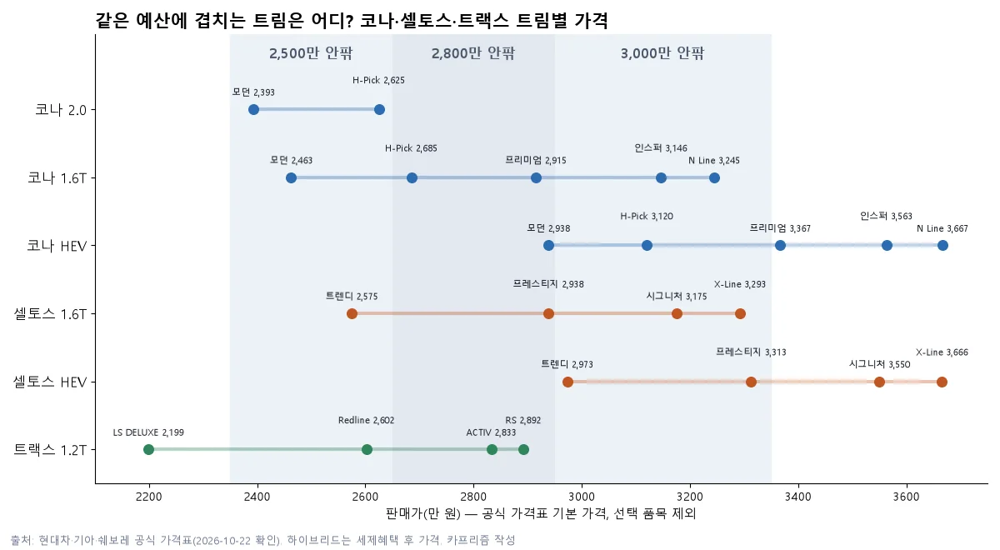
▲ 트림별 공식 가격 배치. 하이브리드는 세제혜택 후 가격이다 카프리즘 작성(공식 가격표 기반)
| 예산 구간 | 코나 | 셀토스 | 트랙스 크로스오버 |
|---|---|---|---|
| 2,350~2,650 | 2.0 모던 2,393 1.6T 모던 2,463 2.0 H-Pick 2,625 | 1.6T 트렌디 2,575 | Redline 2,602 |
| 2,650~2,950 | 1.6T H-Pick 2,685 1.6T 프리미엄 2,915 HEV 모던 2,938 | 1.6T 프레스티지 2,938 | ACTIV 2,833 RS 2,892 |
| 2,950~3,350 | HEV H-Pick 3,120 1.6T 인스퍼레이션 3,146 1.6T N Line 3,245 | HEV 트렌디 2,973 1.6T 시그니처 3,175 1.6T X-Line 3,293 HEV 프레스티지 3,313 | 해당 트림 없음(기본 4개 트림 최고 2,892) |
같은 구간이어도 파워트레인이 다른 이유는 코나가 가솔린 2.0·1.6 터보·1.6 하이브리드 세 가지를, 셀토스가 1.6 터보와 하이브리드를 파는 반면 트랙스는 1.2 터보 하나뿐이기 때문이다. 즉 예산이 같아도 "엔진을 고르는 폭"은 코나가 가장 넓다.
2. 가격표는 어느 연식·어느 세율 기준일까?
코나와 셀토스는 2027년형이고, 트랙스는 공식 자료가 모두 2026으로 표기돼 있다. 코나는 가격표에 2027년형(현 모델 출시일 2026년 4월 7일)으로 적혀 있고, 셀토스는 기아 사이트가 "The 2027 Seltos 2,575만 원부터(1.6 가솔린 터보 트렌디 기준)"라고 표기하며 헤럴드경제는 기아가 10월 15일 2027년형으로 전환하며 가격을 올렸다고 보도했다. 트랙스는 쉐보레 가격표(2026년 7월판)·카탈로그(2026년 10월판)·공식 페이지 모두 "2026"이고 2027년형 표기는 찾지 못했다.
세율은 더 헷갈린다. 개별소비세 인하(3.5%) 조치는 기획재정부가 2025년 12월 24일 2026년 6월 30일까지 6개월 연장하면서 하반기 종료 방침을 밝혔고(국민일보 보도), 2026년 7월 1일부터 정상 세율 5%로 돌아간 것으로 보도됐다. 앞서 카프리즘이 다룬 트랙스 2,199만 원 기사에서도 "개별소비세 5.0% 기준"이라는 단서가 붙었다. 자동차 정보 사이트 카눈도 같은 코나 2027 1.6 터보 가격(모던 2,463만 원~인스퍼레이션 3,146만 원)을 "개소세 5% 기준"으로 표기하지만, 이는 제조사 발표가 아니다.
현대차그룹 뉴스룸의 코나 출시 자료는 "개별소비세 3.5% 기준, 하이브리드는 친환경차 세제혜택 반영 후"라고 명기했지만, 현재 현대차·기아 PDF 가격표와 쉐보레 가격표·카탈로그에는 세율 표기가 없다. 현재 가격이 5% 기준이라는 판단은 아래 표의 차액과 언론 보도에 근거한 추정이다. 한국지엠은 7월 15일까지 출고분에 개별소비세 추가 지원을 내걸었다는 보도도 있었다(머니투데이).
| 트림 | 출시 보도 가격 | 현재 가격표 | 차이 |
|---|---|---|---|
| 코나 2.0 모던 | 2,360 | 2,393 | +33 |
| 코나 1.6T 모던 | 2,429 | 2,463 | +34 |
| 코나 1.6T H-Pick | 2,647 | 2,685 | +38 |
| 코나 HEV 모던(세제혜택 후) | 2,896 | 2,938 | +42 |
| 코나 HEV 인스퍼레이션(세제혜택 후) | 3,512 | 3,563 | +51 |
| 셀토스 1.6T 트렌디 | 2,477 | 2,575 | +98 |
| 셀토스 1.6T 프레스티지 | 2,840 | 2,938 | +98 |
| 셀토스 HEV 트렌디(세제혜택 후) | 2,898 | 2,973 | +75 |
| 셀토스 HEV 프레스티지(세제혜택 후) | 3,208 | 3,313 | +105 |
코나는 차액이 트림에 따라 33~51만 원으로 세율 환원 효과로 읽히지만, 셀토스의 74~105만 원은 두 가지가 겹친 결과다. 헤럴드경제(2026.10.16)에 따르면 기아는 10월 15일 셀토스를 2027년형으로 바꾸며 가솔린 26~60만 원, 하이브리드 25~54만 원을 올렸고, 같은 기사는 출시 때와 인상 직전 사이의 차이를 세율 환원분으로 계산했다. 출시 보도 가격은 코나가 현대차그룹 뉴스룸, 셀토스가 기아 출시 보도자료 기준이다.
| 트림 | 출시가(2026.1) | 인상 직전 | 현재(2027년형) | 세율 환원분 | 연식변경 인상분 | 합계 |
|---|---|---|---|---|---|---|
| 1.6T 트렌디 | 2,477 | 2,515 | 2,575 | +38 | +60 | +98 |
| 1.6T 프레스티지 | 2,840 | 2,884 | 2,938 | +44 | +54 | +98 |
| HEV 프레스티지(세제혜택 후) | 3,208 | 3,259 | 3,313 | +51 | +54 | +105 |
셀토스의 세율 환원분(38~51만 원)은 코나(33~51만 원)와 같은 범위여서, 셀토스가 더 크게 오른 이유는 연식변경 인상분이 얹혔기 때문이다. 기아는 인상 사유를 공식적으로 설명하지 않았고 기사에도 기아 측 입장 인용이 없어, 연식변경·세율·원가 요인은 보도의 해석일 뿐이다. 2027년형에서는 트렌디에 파노라믹 와이드 디스플레이·풀오토 에어컨, 프레스티지에 오토 플러시 도어핸들이 기본이 됐고, 컨비니언스 패키지는 64만 원에서 99만 원으로 올랐다고 보도됐다.
하이브리드는 두 제조사 가격표가 세제혜택 전·후를 함께 적는다. 코나 HEV 모던은 3,038만 원에서 2,938만 원, 셀토스 HEV 트렌디는 3,073만 원에서 2,973만 원으로 감면액이 모두 100만 원이며, 이 하이브리드 세제혜택은 올해 말 종료 예정이라고 보도됐다. 같은 2,938만 원인 코나 HEV 모던(+42)과 셀토스 1.6T 프레스티지(+98)가 출시 때는 2,896만 원과 2,840만 원으로 56만 원 벌어져 있었다는 점도 기억해 둘 만하다. 계약 전에는 견적서 기준으로 보는 편이 안전하다.
3. 2,500만 원 안팎: 같은 돈이면 무엇이 기본일까?
이 구간의 핵심 차이는 "에어백 수와 에어컨"이다. 셀토스 트렌디는 9에어백과 독립제어 풀오토 에어컨이 기본인 반면, 코나 모던은 6에어백이고 에어컨이 수동식이다. 트랙스 Redline은 열선시트·풀오토 에어컨이 기본이지만 화면은 8인치다(11인치 디스플레이 패키지 70만 원 선택 시 11인치).

▲ 신형(2세대, SP3) 기아 셀토스 전면. 2026년 7월 촬영된 차량 ⓒ Avante2025, Wikimedia Commons (CC BY 4.0)
| 항목 | 코나 2.0 모던 2,393 | 코나 1.6T 모던 2,463 | 셀토스 1.6T 트렌디 2,575 | 트랙스 Redline 2,602 |
|---|---|---|---|---|
| 출력(공식) | 149PS | 198PS | 193PS | 139PS |
| 변속기 | IVT | 8단 자동 | 8단 자동 | 6단 자동 |
| 에어백 | 6 | 6 | 9 | 6(쉐보레 가격표) |
| 휠 | 17" | 17" | 16" | 17" |
| 화면 | 12.3" 디스플레이 오디오 | 12.3" 디스플레이 오디오 | 12.3" 디스플레이 오디오 | 8" 터치스크린 |
| 에어컨 | 매뉴얼 | 매뉴얼 | 독립제어 풀오토 | 풀오토 |
| 열선 | 1열 열선시트·핸들 | 1열 열선시트·핸들 | 1열 열선시트·핸들 | 앞좌석 열선시트·핸들 |
| 전방 충돌방지(AEB) | 기본(차량·보행자·자전거) | 기본(차량·보행자·자전거) | 기본(교차로·정면 대향차까지) | 기본(저속 AEB·전방 보행자 감지 제동, 가격표상 전 트림 공통) |
같은 값이어도 차이가 나는 이유는 기아가 트렌디에 9에어백과 독립 풀오토 에어컨, 공기청정 시스템까지 넣고 휠을 16인치로 낮춘 반면, 현대차는 2027년형 모던의 가격을 49만 원 낮추면서 인조가죽 시트·내장을 '컴포트 초이스'(40만 원) 옵션으로 분리했기 때문이다.
4. 2,800만~2,900만 원대: 같은 2,938만 원인데 무엇이 다를까?
셀토스 1.6 터보 프레스티지(2,938만 원)와 코나 1.6 하이브리드 모던(2,938만 원)이 같은 값이고, 둘 사이에 트랙스 ACTIV(2,833만 원)·RS(2,892만 원)와 코나 1.6T 프리미엄(2,915만 원)이 끼어 있다. 가격은 비슷하지만 무엇을 기본으로 주느냐가 갈린다.
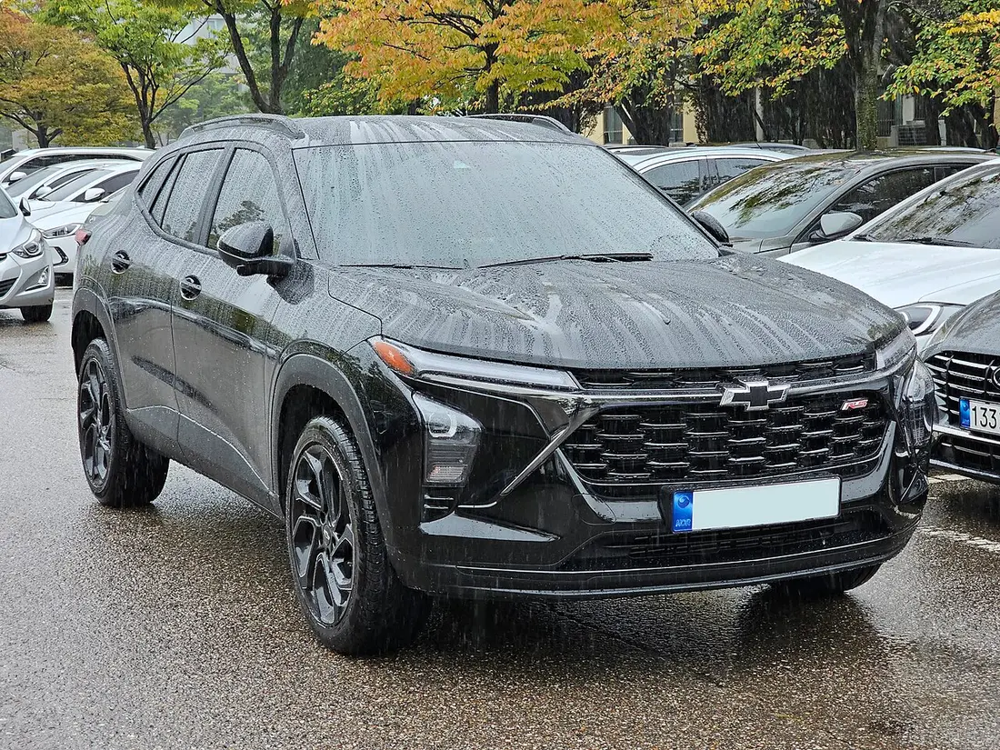
▲ 쉐보레 트랙스 크로스오버 RS 전면(한국 촬영, 2023년 9월). 2026년식과 세부가 다를 수 있다 ⓒ Damian B Oh, Wikimedia Commons (CC BY-SA 4.0)
| 항목 | 트랙스 ACTIV 2,833 | 트랙스 RS 2,892 | 코나 1.6T 프리미엄 2,915 | 셀토스 1.6T 프레스티지 2,938 | 코나 HEV 모던 2,938 |
|---|---|---|---|---|---|
| 파워트레인 | 1.2T 139PS | 1.2T 139PS | 1.6T 198PS | 1.6T 193PS | 1.6 HEV 시스템 141PS |
| 에어백 | 6 | 6 | 6 | 9 | 6 |
| 휠 | 18" | 19" | 18" | 18" | 17" |
| 화면 | 11" 터치 + 8" 클러스터 | 11" 터치 + 8" 클러스터 | 12.3" 내비게이션 | 12.3" 내비게이션 + AI 어시스턴트 | 12.3" 디스플레이 오디오 |
| 후측방 경고·방지류 | 기본(사각지대·차선 변경·후측방 경고) | 기본(사각지대·차선 변경·후측방 경고) | 기본(후측방·후방 교차·하차 경고) | 기본 아님(시그니처부터) | 기본 아님(모던 목록에 없음) |
| 고속도로 주행 보조 | 기본 아님(어댑티브 크루즈 컨트롤은 테크놀로지 패키지 80만 원에 포함). 차로 유지 보조는 기본 | 기본 아님(어댑티브 크루즈 컨트롤은 테크놀로지 패키지 80만 원에 포함). 차로 유지 보조는 기본 | 기본 아님(인스퍼레이션 기본, 그 아래는 선택 품목 구성) | 기본(내비 기반 스마트 크루즈 포함) | 기본 아님(선택 품목 구성) |
| 통풍·전동시트 | 앞좌석 3단 통풍, 운전석 8way 전동 | 앞좌석 3단 통풍, 운전석 8way 전동 | 1열 통풍, 운전석 전동 | 1열 통풍, 운전석 파워시트 | 없음(직물 시트) |
| 무선 충전 | 기본 | 기본 | 기본 | 기본 | 공식 목록에 없음 |
| 하이패스 | ETCS 기본 | ETCS 기본 | 기본 | 기본 | 선택 품목 20만 원 |
하이브리드 모던은 파워트레인 값이 가격에 얹히는 구조라 같은 2,938만 원에 사양이 얇고, 셀토스 프레스티지는 가솔린이라 같은 값이 사양 쪽에 더 들어가 있다. 트랙스는 엔진이 가장 작은 대신 통풍시트·전동시트·무선 충전이 이 가격에서 기본으로 들어 있다. 안전 쪽은 오히려 트랙스가 균일하다. 쉐보레 가격표는 6에어백, 저속 자동 긴급 제동, 전방 보행자 감지·제동, 차선 이탈 경고·유지 보조, 사각지대·차선 변경 경고, 후측방 경고를 가장 싼 LS DELUXE부터 기본으로 적는다. 대신 어댑티브 크루즈 컨트롤은 전 트림이 선택품목이다(LS DELUXE·Redline 45만 원, ACTIV·RS는 파워 리프트게이트가 함께 들어간 테크놀로지 패키지 80만 원).
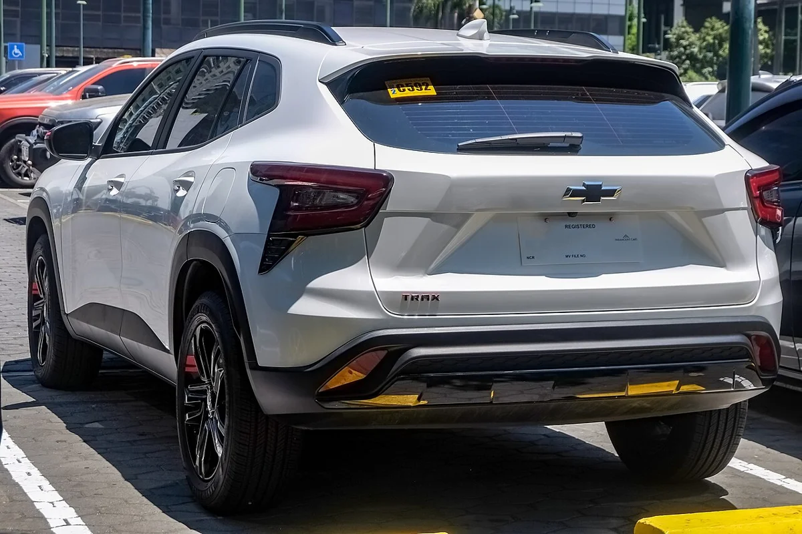
▲ 쉐보레 트랙스 크로스오버 Redline 후면. 2026년 4월 촬영 ⓒ Ethan Llamas, Wikimedia Commons (CC BY-SA 4.0)
5. 3,000만 원 안팎: 트랙스가 빠지면 무엇이 달라질까?
3,000만 원을 넘기면 비교 대상은 코나와 셀토스로 좁혀진다. 트랙스는 공식 페이지의 기본 4개 트림이 2,892만 원에서 끝난다.
| 트림 | 가격 | 기본으로 올라오는 것 | 비고 |
|---|---|---|---|
| 셀토스 HEV 트렌디 | 2,973 | 9에어백, 12.3" 디스플레이 오디오 | 16" 휠, 하이브리드 기본형 |
| 코나 HEV H-Pick | 3,120 | 18" 휠, 인조가죽 시트, 12.3" 내비게이션, 후측방 경고·방지 | 듀얼 풀오토 에어컨 |
| 코나 1.6T 인스퍼레이션 | 3,146 | 고속도로 주행 보조, 진동 경고 스티어링 휠 | 12.3" 클러스터 포함 |
| 셀토스 1.6T 시그니처 | 3,175 | 후측방 충돌방지, 스마트 파워테일게이트, 디지털 키 2 | 12.3" 풀 클러스터 |
| 코나 1.6T N Line | 3,245 | N Line 전용 외관·내장, 19" 휠 | 천연가죽·알칸타라 콤비 시트 |
| 셀토스 1.6T X-Line | 3,293 | 시그니처 사양에 X-Line 전용 디자인 | 19" 휠 |
| 셀토스 HEV 프레스티지 | 3,313 | 하이브리드에 18" 휠·통풍시트·내비게이션 | 후측방 충돌방지류는 시그니처부터 |
같은 3,100만 원대여도 코나 1.6T 인스퍼레이션은 가솔린 198PS에 고속도로 주행 보조가 기본이고, 셀토스 시그니처는 가솔린 193PS에 후측방 충돌방지와 스마트 파워테일게이트를 기본으로 준다. 어느 쪽이 맞는지는 운전자가 후측방 보조를 더 쓰는지, 고속도로 주행 보조를 더 쓰는지에 달려 있다.
3,350만 원을 넘어서면 하이브리드 상위 트림이 이어진다. 공식 가격표 기준(세제혜택 후)으로 코나 HEV는 프리미엄 3,367만 원, 인스퍼레이션 3,563만 원, N Line 3,667만 원이고, 셀토스 HEV는 시그니처 3,550만 원, X-Line 3,666만 원이다. 코나 HEV N Line은 18인치 휠에 천연가죽·알칸타라 콤비 시트가 들어가며, 가솔린 N Line(19인치, 3,245만 원)보다 422만 원 비싸다. 이 구간은 트랙스가 없어 두 차의 하이브리드끼리만 겹친다.

▲ 현대 코나 하이브리드 후측면(2세대 SX2, 2023년 5월 촬영). 2027년형과 세부가 다를 수 있다 ⓒ Damian B Oh, Wikimedia Commons (CC BY-SA 4.0)
6. 공식 제원으로 본 크기·2열 공간·적재량은 어떻게 다를까?
트랙스가 가장 길고(4,540mm), 셀토스가 가장 높으며(1,600mm), 코나가 세 차 중 가장 작다. 2열 공간을 가늠할 공식 수치로는 축거가 있고, 적재량은 셀토스만 공식 수치가 확인된다.
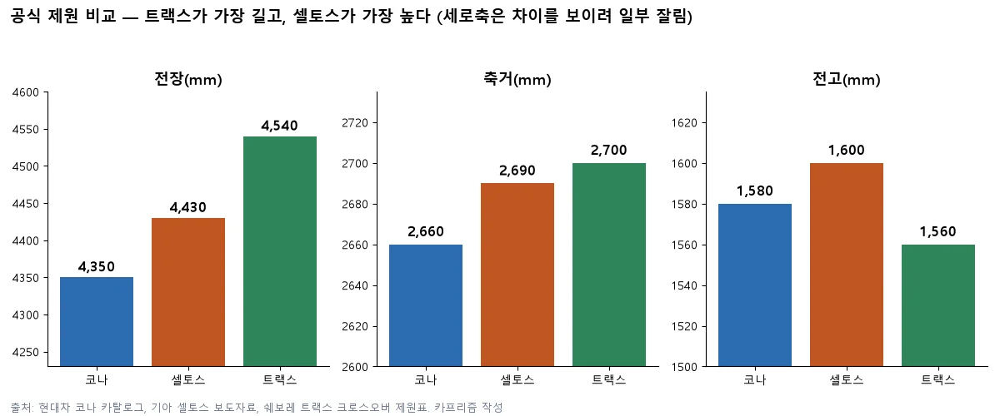
▲ 공식 제원 비교. 차이가 보이도록 세로축 일부를 잘랐다 카프리즘 작성(공식 제원 기반)
| 항목 | 코나(2027) | 셀토스(2세대) | 트랙스 크로스오버 |
|---|---|---|---|
| 전장(mm) | 4,350 (N Line 4,385) | 4,430 | 4,540 |
| 전폭(mm) | 1,825 | 1,830 | 1,825 |
| 전고(mm) | 1,580 | 1,600 | 1,560 |
| 축거(mm) | 2,660 | 2,690 | 2,700 |
| 적재량(VDA) | 466ℓ(내연기관, 현대차그룹 2세대 출시 설명) | 536ℓ(기아 보도자료) | 한국지엠 가격표·카탈로그에 없음 |
| 2열 공간 | 레그룸 970mm·숄더룸 1,402mm·헤드룸 972mm(2세대 출시 설명) | 헤드룸 +14mm·레그룸 +25mm 확대(절대 수치 없음) | 수치 없음 |
| 공차중량(kg) | 1,360~1,455(가솔린), 1,435~1,450(HEV) | 1,465(16")~1,505(19")(1.6T 2WD) | 1,300~1,340(17~19") |
| 연료탱크(ℓ) | 47(가솔린)·38(HEV) | 50(1.6T)·38(HEV) | 50 |
| 최고출력 | 198PS(1.6T)·149PS(2.0)·141PS(HEV 시스템) | 193PS(1.6T)·141PS(HEV 시스템) | 139PS(1.2T) |
| 최대토크(1.6T 등 가솔린) | 27.0(1.6T)·18.3(2.0) kgf·m | 27.0(1.6T) kgf·m | 22.4 kgf·m |
| 공식 복합연비(가솔린) | 12.2~13.0(1.6T)·13.0~13.6(2.0) | 최대 12.5 | 12.7(17") |
트랙스는 코나보다 전장이 190mm, 축거가 40mm 길다. 코나는 현대차그룹이 2세대 출시 때 밝힌 자료(2023.5.16)에서 내연기관 기준 트렁크 466ℓ(VDA)와 후석 레그룸 970mm·숄더룸 1,402mm·헤드룸 972mm를 제시했다. 2027년형 카탈로그는 수치 없이 2열 공간이 넓어졌다고만 적어 같은 값이라고 단정하지 않았고, 하이브리드의 트렁크 수치는 별도로 확인하지 못했다. 셀토스의 536ℓ는 기아가 "동급 최대 수준"이라고 설명한 값이며, 코나 466ℓ와 같은 VDA 기준이라 비교는 가능하지만 자료 시점이 달라 참고용이다. 트랙스는 한국지엠 가격표(2026년 7월판)·카탈로그(2026년 10월판) 어디에도 적재량과 2열 수치가 없고, 일부 정보 사이트의 414ℓ·1,405ℓ는 공식 자료로 확인하지 못해 표에 넣지 않았다.
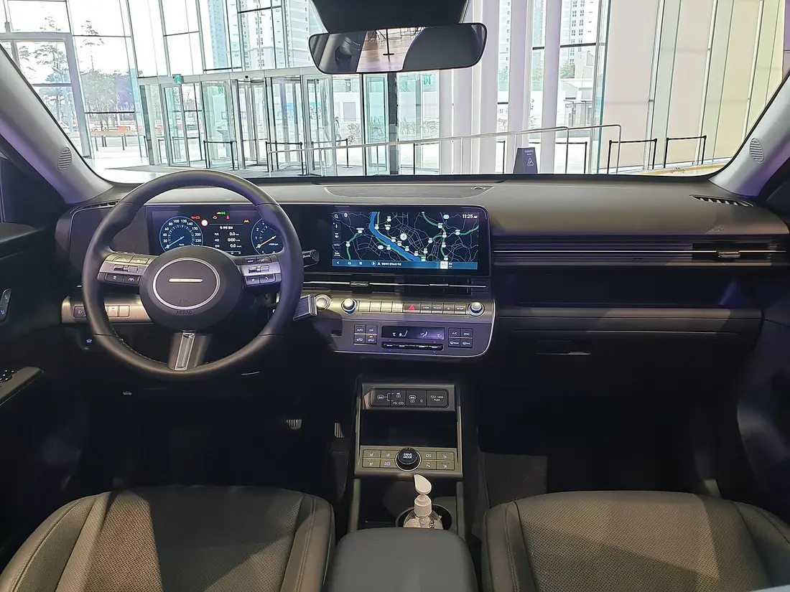
▲ 현대 코나 1.6 터보 인스퍼레이션 실내(2세대 SX2, 2023년 3월 현대 모터스튜디오 고양 전시차). 2027년형과 세부가 다를 수 있다 ⓒ Damian B Oh, Wikimedia Commons (CC BY-SA 4.0)
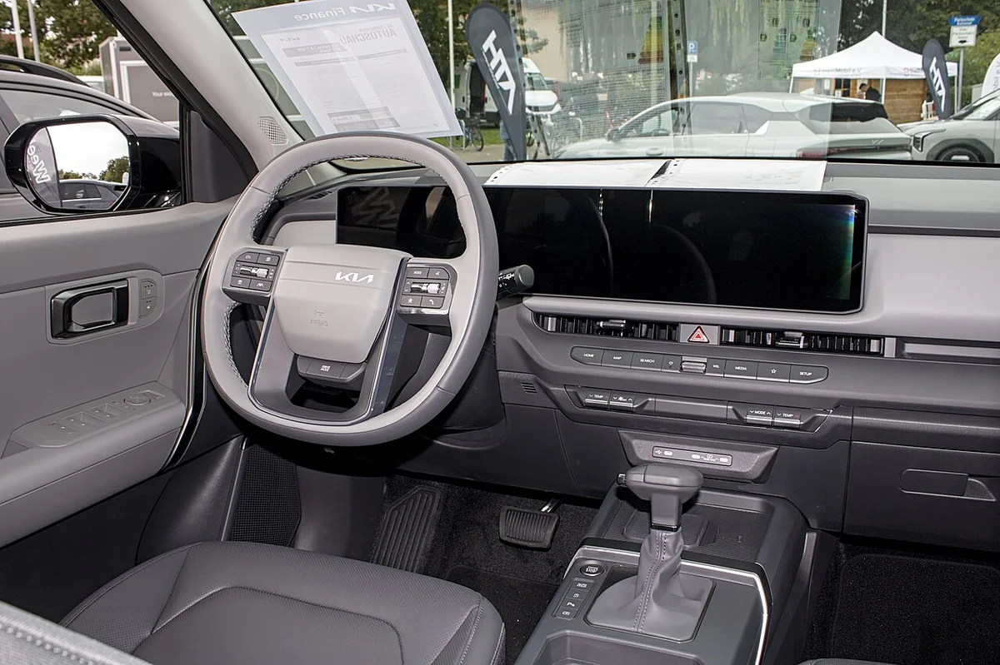
▲ 2세대 기아 셀토스 실내. 독일 레온베르크 전시 차량(2026년 9월)이라 한국 사양과 변속 레버 등이 다를 수 있다 ⓒ Alexander Migl, Wikimedia Commons (CC BY-SA 4.0)
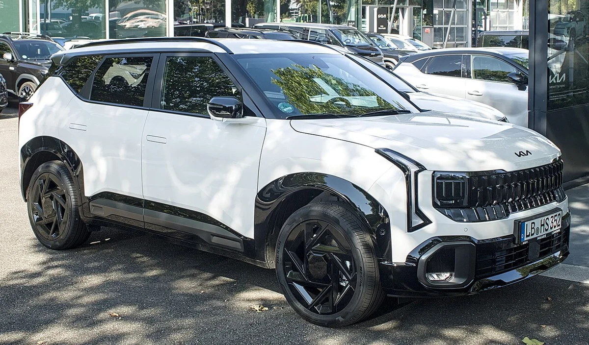
▲ 2세대 기아 셀토스 전측면. 독일 루트비히스부르크에서 2026년 8월 촬영된 유럽 사양 차량이라 한국 사양과 다를 수 있다 ⓒ Alexander Migl, Wikimedia Commons (CC BY-SA 4.0)
7. 연비와 하이브리드 웃돈, 몇 년이면 회수될까?
가솔린 세 차의 공식 복합연비는 12.5~13.6km/ℓ로 비슷하고, 하이브리드는 19.5~19.8km/ℓ까지 올라가지만 웃돈이 398만~545만 원이다. 연료비로 이 차액을 메우려면 가정에 따라 5년 이상이 걸린다.
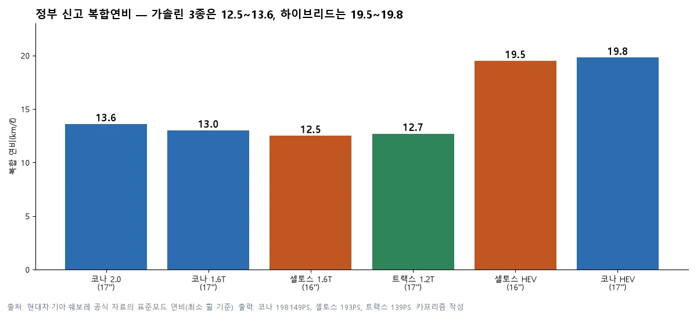
▲ 공식 복합연비(표준모드, 최소 휠 기준) 비교 카프리즘 작성(공식 연비 기반)
| 비교 | 가격 차액 | 연간 절감량 | 회수 기간 |
|---|---|---|---|
| 셀토스 HEV 트렌디 vs 1.6T 트렌디 | 398만 원(2,973-2,575) | 약 431ℓ(12.5→19.5km/ℓ) | 약 5.4년 |
| 코나 HEV 모던 vs 1.6T 모던 | 475만 원(2,938-2,463) | 약 396ℓ(13.0→19.8km/ℓ) | 약 7.1년 |
| 코나 HEV 모던 vs 2.0 모던 | 545만 원(2,938-2,393) | 약 345ℓ(13.6→19.8km/ℓ) | 약 9.3년 |
계산은 연 1만 5,000km 주행, 휘발유 ℓ당 1,700원이라는 가정 위에 있다. 이 두 값은 공식 수치가 아니라 카프리즘의 가정이므로, 주행거리가 길수록 회수 기간은 줄어든다. 하이브리드 가격에는 친환경차 세제혜택이 이미 반영돼 있는데, 현대차 가격표는 이 혜택이 법에 따른 기준을 충족한다는 전제의 대략적인 값이라고 안내한다. 하이브리드의 취득세 감면·주차요금 할인 같은 별도 혜택과 보험료·정비비 차이는 계산에 넣지 않았다.
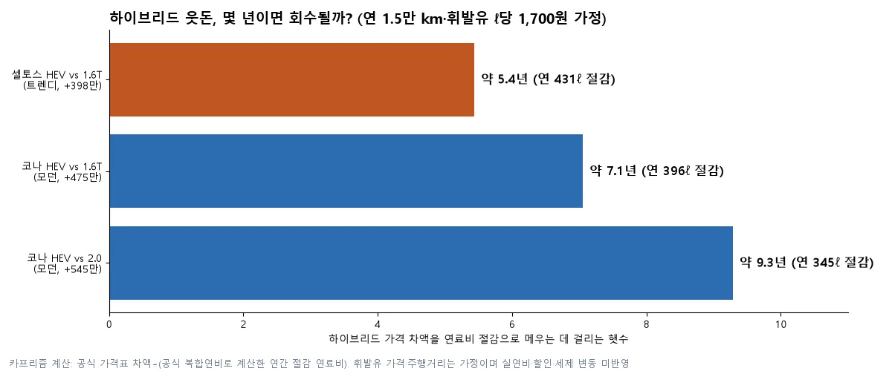
▲ 하이브리드 웃돈 회수 기간(연 1.5만 km, 휘발유 ℓ당 1,700원 가정) 카프리즘 계산
카프리즘 시선
같은 2,938만 원이라도 셀토스 가솔린 프레스티지는 9에어백·내비게이션·고속도로 주행 보조·통풍시트가 기본이고, 코나 하이브리드 모던은 6에어백·직물 시트에 하이패스가 20만 원 옵션이다. 코나 하이브리드의 웃돈 475만 원은 사양이 아니라 파워트레인에 들어간 돈이라는 뜻이다.
그래서 연료비 회수 기간(코나 약 7년)을 따질 때는 "연비를 사는 돈"과 "사양을 사는 돈"을 따로 놓고 봐야 한다. 다만 이는 공식 가격표 숫자에서 나온 해석일 뿐, 실제 연비와 할인 조건은 다를 수 있다.
8. 보증 기간은 어떻게 다를까?
가솔린 기준 보증은 3사가 같고, 차이는 하이브리드 전용 부품에서만 생긴다. 일반 부품은 3년/6만 km, 엔진·동력전달 부품은 5년/10만 km이며 기간과 주행거리 중 먼저 오는 쪽이 만료 기준이다.
| 항목 | 코나(현대차) | 셀토스(기아) | 트랙스(쉐보레) |
|---|---|---|---|
| 차체·일반 부품 | 3년/6만 km | 3년/6만 km | 3년/6만 km |
| 엔진·동력전달 부품 | 5년/10만 km | 5년/10만 km | 5년/10만 km |
| 하이브리드 전용 부품 | 10년/20만 km(고전압 배터리·구동모터·HPCU) | HEV 전용 부품 10년/16만 km, 고전압 배터리 10년/20만 km | 해당 없음(하이브리드 없음) |
| 그 밖의 안내 | 보증은 신차 판매일부터 적용 | 보증은 신차 판매 다음 날부터 적용 | 타이어 긴급수리 5년 무상, 온스타 2년 무상(ACTIV·RS 가격표 기준) |
가솔린 엔진 보증이 같으니 이 항목은 선택 기준이 되기 어렵고, 하이브리드를 고를 때만 따져 볼 만하다. 현대차는 배터리·모터·HPCU를 한 묶음 10년/20만 km로 적는 반면 기아는 배터리(20만 km)와 그 밖의 HEV 전용 부품(16만 km)의 주행거리 한도를 나눠 적는다. 출처는 현대차 보증기간 안내, 기아 보증수리 안내, 쉐보레 컴플리트 케어 안내다.
9. 취득세까지 넣으면 실구매 총액은 얼마일까?
같은 2,938만 원 두 대는 취득세도 약 187만 원으로 같아서, 차 값에 취득세만 더해도 총액은 3,125만 원 안팎이 된다. 비영업용 승용차 취득세율 7%를 부가세를 뺀 공급가액에 곱한 카프리즘 계산이며, 공채·증지·번호판·탁송료·할인은 넣지 않았다.
| 트림 | 가격표 가격 | 공급가액(÷1.1) | 취득세 7% | 합계 |
|---|---|---|---|---|
| 코나 2.0 모던 | 2,393 | 2,176 | 152 | 2,545 |
| 코나 1.6T 모던 | 2,463 | 2,239 | 157 | 2,620 |
| 셀토스 1.6T 트렌디 | 2,575 | 2,341 | 164 | 2,739 |
| 트랙스 Redline | 2,602 | 2,366 | 166 | 2,768 |
| 트랙스 RS | 2,892 | 2,629 | 184 | 3,076 |
| 셀토스 1.6T 프레스티지 | 2,938 | 2,671 | 187 | 3,125 |
| 코나 HEV 모던(세제혜택 후) | 2,938 | 2,671 | 187 | 3,125 |
취득세가 차 값의 약 6.4%라서 2,400만 원대 차는 150만 원대, 2,900만 원대 차는 180만 원대가 더 든다. 하이브리드의 취득세 감면 여부와 지자체별 공채 매입 비율은 이 계산에 넣지 않았으므로, 실제 금액은 견적서와 위택스에서 다시 확인해야 한다.
10. 아쉬운 점과 주의할 점은 무엇일까?
세 차 모두 "싸게 보이는 시작 가격"에는 덜어낸 것이 있다. 같은 가격표를 읽어도 차마다 걸리는 지점이 다르다.
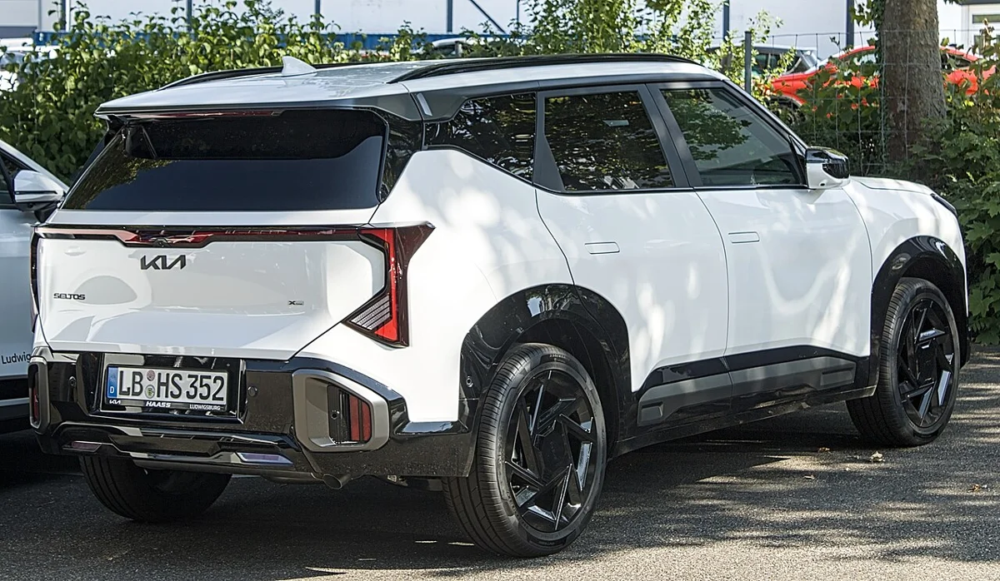
▲ 2세대 기아 셀토스 후면. 독일 번호판 차량으로 2026년 8월 촬영 ⓒ Alexander Migl, Wikimedia Commons (CC BY-SA 4.0)
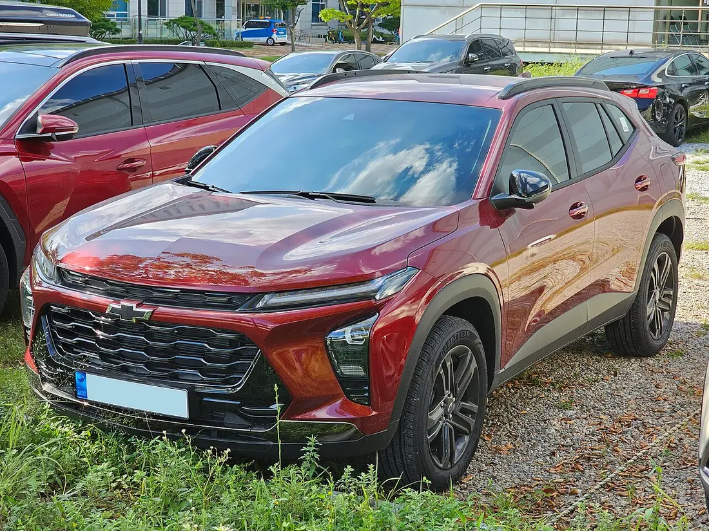
▲ 쉐보레 트랙스 크로스오버 ACTIV 전측면(한국 촬영, 2023년 9월). 2026년식과 세부가 다를 수 있다 ⓒ Damian B Oh, Wikimedia Commons (CC BY-SA 4.0)
- 코나: 2027년형 모던은 가격을 49만 원(가솔린)·59만 원(하이브리드) 낮추면서 인조가죽 시트·내장을 '컴포트 초이스' 옵션으로 분리했다. 하이브리드는 12.3인치 내비게이션도 선택 품목이다. 1.6T 인스퍼레이션과 모던의 가격 폭은 약 683만 원이다. 2027년 초 완전변경(SX3)이 거론된다는 보도가 있어 현행 모델의 시점도 고려 대상이다. 자세한 전망은 코나 풀체인지 기사에서 다뤘다
- 셀토스: 같은 트림이라도 가격이 출시 때보다 올라 있어 세 차 중 값 부담이 가장 크고, 10월 15일 2027년형 전환 때 가솔린 26~60만 원, 하이브리드 25~54만 원이 더 올랐다. 프레스티지에는 후측방 충돌 경고류가 기본이 아니고, 드라이브 와이즈 선택 품목(119만 원)으로 올려야 한다. 신형의 상품 구성과 하이브리드 설명은 셀토스 출시 기사에 있다
- 트랙스: 파워트레인이 1.2 터보 하나뿐이고 하이브리드·사륜 선택지가 없으며 적재량·2열 수치를 한국지엠이 공개하지 않는다. 어댑티브 크루즈 컨트롤은 전 트림 선택품목이다. 한정 에디션은 RS 전용으로, 이그나이트 에디션(35만 원)은 카본룩 스키드 플레이트 인서트·미러 커버, 올웨더 카고·플로어 라이너, 스포츠 페달 커버 같은 순정 액세서리 묶음이고, 미드나잇 에디션(80만 원)은 18인치 글로스 블랙 휠·블랙 그릴바·모던 블랙 외장에 어댑티브 크루즈 컨트롤과 파워 리프트게이트를 더한 구성이다. 두 에디션은 중복 선택이 안 되며 올웨더 카고 라이너를 달려고 뒷좌석 시트백에 구멍을 뚫는다고 가격표가 안내한다
이런 한계 때문에 "가장 싼 트림"이 아니라 "내가 반드시 필요한 사양이 들어 있는 가장 싼 트림"을 기준으로 삼아야 한다. 같은 체급에서 트레일블레이저까지 넣은 비교는 트레일블레이저·셀토스·코나 3파전 기사에서 다뤘다.
✅ 계약 전 확인 질문 5가지
· 세율 기준: 견적서의 가격이 개별소비세 5% 기준인지, 하이브리드는 세제혜택 반영 후 가격인지 묻는다
· 필수 사양 위치: 후측방 경고, 고속도로 주행 보조, 열선·통풍시트가 내가 보는 트림에 기본인지 가격표 기본 품목란에서 확인한다
· 연식: 코나·셀토스는 2027년형, 트랙스는 공식 자료에 2026으로 표기돼 있어 연식을 견적서에서 확인한다
· 할인·재고: 월별 할인과 재고 차량은 가격표에 없으므로 영업소 견적을 비교한다
· 적재량 실측: 공식 수치가 없는 트랙스(코나는 가솔린 466ℓ만 공개)는 전시장에서 직접 짐 공간을 확인한다
11. 이 글이 확인하지 못한 것
- 현재 가격표의 세율 표기: 현대차·기아 PDF 가격표와 쉐보레 가격표·카탈로그는 개별소비세율을 적지 않았다. 5% 환원 기준은 출시 자료(3.5% 명기)와의 차액, 헤럴드경제 보도로 판단한 것이다
- 트랙스의 적재량과 2열 공간: 한국지엠 가격표(2026년 7월판)·카탈로그(2026년 10월판)·공식 페이지에 수치가 없다. 코나는 2023년 출시 설명(내연기관)만 있고 2027년형·하이브리드의 동일 여부는 확인하지 못했다
- 트랙스 2027년형: 공식 자료가 모두 2026으로 표기돼 2027년형 발표를 찾지 못했다
- 셀토스 가격 인상의 공식 사유: 기아의 공식 설명이나 공지를 찾지 못했고, 연식변경·세율 환원·원가는 보도의 해석이다
- 하이브리드 세제혜택의 연말 종료: 헤럴드경제 보도이며 제조사 공식 안내는 확인하지 못했다
- 실구매가: 취득세(7%)만 계산했고 하이브리드 취득세 감면 여부, 공채·증지·번호판, 월별 할인·프로모션은 반영하지 않았다
- 코나 가격표 읽기: PDF 문자 추출로 읽은 뒤 2026년 10월 22일 가솔린·하이브리드 전 트림(N Line 하이브리드 3,667만 원 포함)을 다시 대조했다. PDF는 사양 표 배열이 복잡해 옵션 구성은 계약 전 공식 가격표로 다시 확인해야 한다
12. 요약
코나·셀토스·트랙스는 2,500만 원 안팎과 2,800만 원 안팎에서 겹치고, 3,000만 원 이상에서는 코나와 셀토스만 남는다. 2,938만 원은 셀토스 1.6T 프레스티지와 코나 HEV 모던이 같은 값인데, 전자는 9에어백·내비게이션·고속도로 주행 보조가, 후자는 하이브리드 파워트레인이 값의 중심이다.
공식 제원은 트랙스가 4,540mm·축거 2,700mm로 가장 크고, 적재량(VDA)은 셀토스 536ℓ·코나 466ℓ만 공식 자료에 있다. 하이브리드 웃돈(398만~545만 원)은 연 1.5만 km·ℓ당 1,700원 가정에서 5.4~9.3년에 걸쳐 회수된다. 보증은 3사 가솔린 기준이 같고, 2,938만 원 차의 취득세는 약 187만 원이다. 세율·연식·트랙스 적재량은 공식 자료에서 확인하지 못한 부분이 있어 계약 전 견적서로 다시 확인해야 한다.